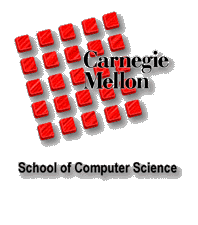
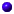

The CMU Pronouncing Dictionary

The CMU Pronouncing Dictionary
Speech at CMU |
about |
query |
phonemes

Look up the pronunciation for a word or a sentence in CMUdict (v. 0.7a)
Download the current CMU dictionary from SourceForge
https://cmusphinx.svn.sourceforge.net/svnroot/cmusphinx/trunk/cmudict/.
Find an error? Please contact the developers. We will look at the problem and improve the dictionary. (See at bottom for contact information.)
About the CMU dictionary
The Carnegie Mellon University
Pronouncing Dictionary is a machine-readable
pronunciation dictionary for North American English that contains over
125,000 words and their transcriptions.
This format is particularly useful for speech recognition and synthesis,
as it has mappings from words to their pronunciations in the given
phoneme set. The current phoneme set contains 39 phonemes, for which the
vowels may carry lexical stress.
0 No stress
1 Primary stress
2 Secondary stress
Note that this dictionary is not in the format
you want to use for the Sphinx decoder. For that purpose, either go to SourceForge or use the following
tool.
Phoneme Set
The current phoneme set has 39 phonemes, not counting varia due to lexical stress.
This phoneme (or more accurately, phone) set is based on the ARPAbet symbol set developed
for speech recognition uses.
You can find a description of the ARPAbet on Wikipedia,
as well information on how it relates to the standard IPA symbol set.
Phoneme Example Translation
------- ------- -----------
AA odd AA D
AE at AE T
AH hut HH AH T
AO ought AO T
AW cow K AW
AY hide HH AY D
B be B IY
CH cheese CH IY Z
D dee D IY
DH thee DH IY
EH Ed EH D
ER hurt HH ER T
EY ate EY T
F fee F IY
G green G R IY N
HH he HH IY
IH it IH T
IY eat IY T
JH gee JH IY
K key K IY
L lee L IY
M me M IY
N knee N IY
NG ping P IH NG
OW oat OW T
OY toy T OY
P pee P IY
R read R IY D
S sea S IY
SH she SH IY
T tea T IY
TH theta TH EY T AH
UH hood HH UH D
UW two T UW
V vee V IY
W we W IY
Y yield Y IY L D
Z zee Z IY
ZH seizure S IY ZH ER
this cgi was created by kevin lenzo,
and the source code is freely available.
for correspondence about this interface, including
options you'd like to see, please contact
sphinx+web@cs.cmu.edu.